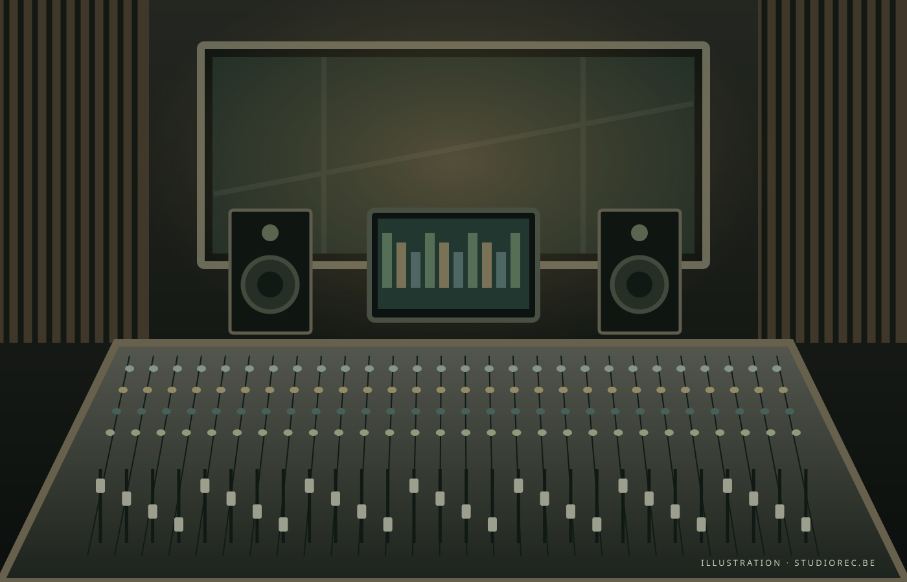

Prise de son
Micros à condensateur et dynamiques, préamplis et traitements pour capter chaque nuance.
MICROPHONES / PRÉAMPLISDes premières idées à la dernière prise.
Un studio à taille humaine, au service de votre musique.
On aime les prises qui vibrent,
les idées qui débordent, les sons qui restent.
Imaginez un espace où l’on prend le temps d’écouter. Une régie chaleureuse, des instruments à portée de main et toute la place nécessaire pour trouver votre couleur.
En solo ou avec votre groupe, venez enregistrer, produire et façonner votre prochain projet.
Présentation à personnaliser avec l’histoire du studio.
De la chaleur analogique à la précision numérique.
Un aperçu de ce que peut accueillir votre session.
Micros à condensateur et dynamiques, préamplis et traitements pour capter chaque nuance.
MICROPHONES / PRÉAMPLISUne écoute précise, des outils de production et une chaîne audio au service de votre intention.
CONVERSION / MONITORING / DAWBatterie, amplis, claviers : préparez votre session avec le matériel adapté à votre projet.
BATTERIE / AMPLIS / CLAVIERSInventaire indicatif : la liste des modèles et leur disponibilité seront précisés par le studio.
Choisissez votre format, consultez les disponibilités et préparez votre venue. Une idée en tête ? On lui fait une place.
Réservation via Google Agenda, une fois le calendrier du studio connecté.
Réglez directement sur le compte du studio via une page PayPal sécurisée.
Adresse du studio à renseigner.
Préparez votre trajet et venez l’esprit libre.
Avec votre accord, votre adresse IP est transmise à ipapi.co pour estimer votre ville de départ. Vous pourrez modifier ce départ dans Google Maps.
La carte interactive apparaîtra dès que
l’adresse du studio sera renseignée.
Site de démonstration. Identité de l’éditeur, coordonnées, tarifs, conditions de réservation, d’annulation et informations légales à compléter avant publication. Les photos d’illustration sont chargées depuis Unsplash. Les services Google, PayPal et ipapi.co appliquent leurs propres politiques de confidentialité. Ce site ne collecte ni coordonnées bancaires ni identifiants Google.